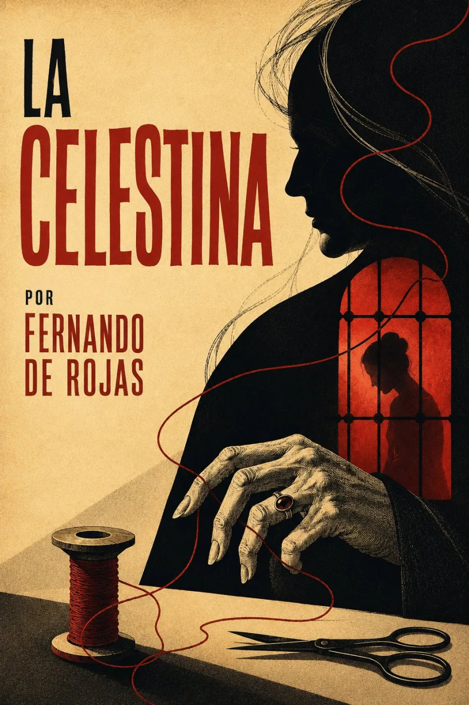

SINOPSIS
Conocida hoy por el nombre de su mediadora, la obra circuló primero como Comedia de Calisto y Melibea, en dieciséis actos, y después como Tragicomedia, ampliada a veintiuno. Su propia historia editorial conserva una autoría problemática: Fernando de Rojas declara haber continuado un primer acto ajeno, y la crítica todavía discute cómo leer esa afirmación. En escena, el deseo de Calisto moviliza una red de criados, amantes, recompensas y resentimientos que Celestina sabe convertir en transacción. Melibea no es únicamente objeto de una intriga; su voz transforma el conflicto y conduce la obra hacia una cadena de muertes culminada por el lamento de Pleberio. El diálogo no ofrece una moraleja simple: hace convivir retórica cortesana, saber urbano, codicia, placer y duelo en un mundo donde las palabras persuaden, compran y destruyen.
Nota textual: historia de las redacciones y problema de autoría contrastados con la Biblioteca Nacional de España y la edición de la Real Academia Española.
CAPÍTULOS
El encuentro de Calisto y Melibea
Celestina: mediación, conjuro y contrato
Criados, amantes y la cadena de la codicia
La voz y el deseo de Melibea
Muertes y planto de Pleberio
RESEÑAS

Excelente